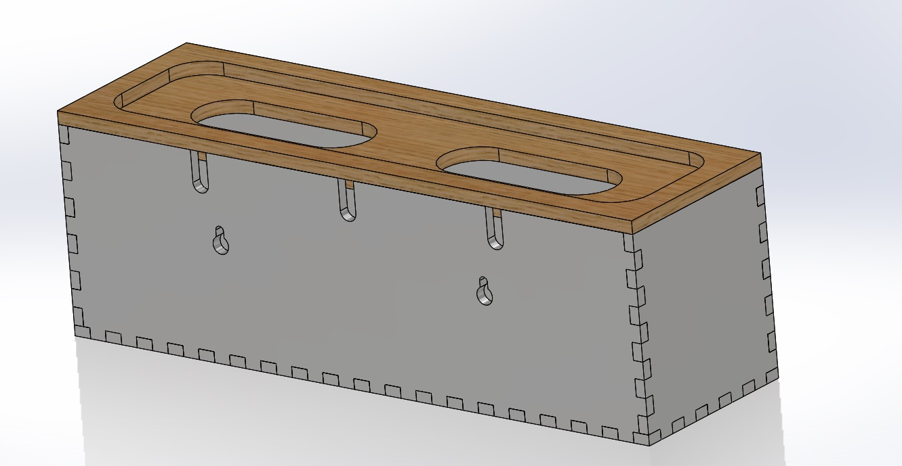

Vi har skapat en så kallad sladdgömma. Produktidén kom de på efter att vi sätt ett stort problem med trasslade sladdar i skolans datasal samt i det privata hemmet. Därför tog vi fram denna produkt genom vårt UF företag PowerStrip. Produktens låda är tillverkad i MDF 6 med ett lock tillverkat i Ek.
Lådan är tillverkad och designad på ett smidigt sätt så den kan placeras på valfritt ställe i hemmet och även sättas upp på väggen, till exempel en bit över golvlisten så att man enkelt och smidigt kan dammsuga under lådan.
Text-designen på sidan som vi har gjort för lådan är inte permanent. Vi kan efter förfrågan göra en personlig text eller motiv. Kunden har chans att välja färg på lådan, material på locket, och gravyr/genomskuren text på framsidan av lådan.